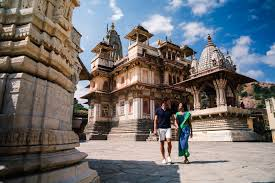
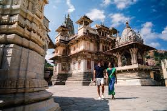

: 🰠Jaipur – The Pink City of India Jaipur, the capital of Rajasthan, is one of the most vibrant and culturally rich cities in India. Founded in 1727 by Maharaja Sawai Jai Singh II, it is famous for its royal heritage, grand forts, colorful markets, and traditional Rajasthani hospitality. ✨ Why It’s Called the Pink City In 1876, the entire city was painted pink to welcome the Prince of Wales (later King Edward VII). Since then, pink has remained the symbolic color of Jaipur, giving it the title Pink City.
.
🌟 Major Attractions
Amber Fort – A majestic fort with stunning architecture and elephant rides.
Hawa Mahal (Palace of Winds) – Known for its honeycomb windows, built for royal women to watch street processions.
City Palace – A beautiful blend of Mughal and Rajput architecture.
Jantar Mantar – An astronomical observatory and UNESCO World Heritage Site.
Nahargarh & Jaigarh Forts – Offering panoramic views of the city.
.
ğŸ Culture & Lifestyle
Jaipur is famous for its folk music, traditional dances, puppet shows, and colorful festivals like Teej and Gangaur.
The local markets are full of handicrafts, jewelry, textiles, blue pottery, and gemstones.
Rajasthani food like dal-baati-choorma, ghevar, and laal maas are must-tries.